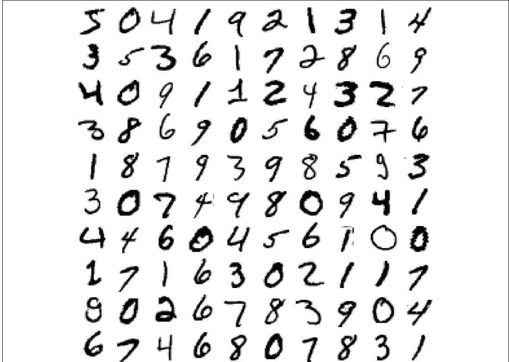
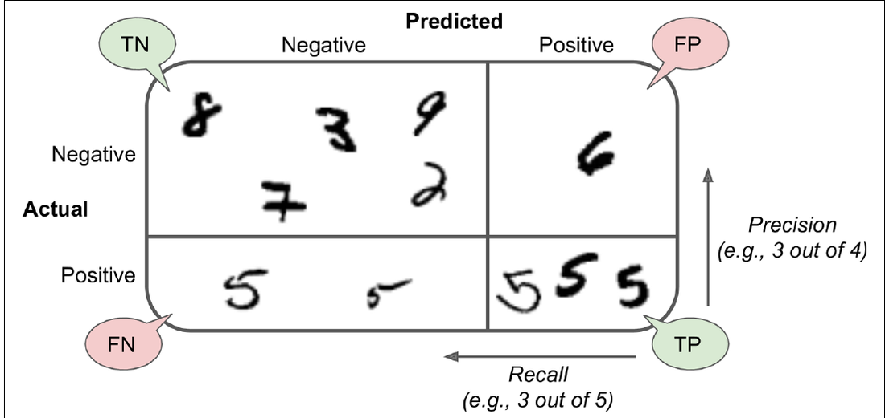
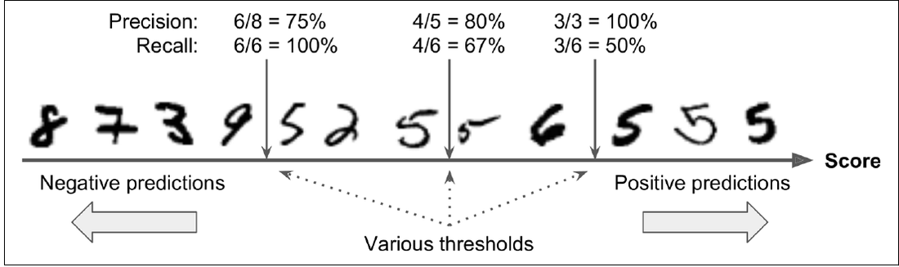
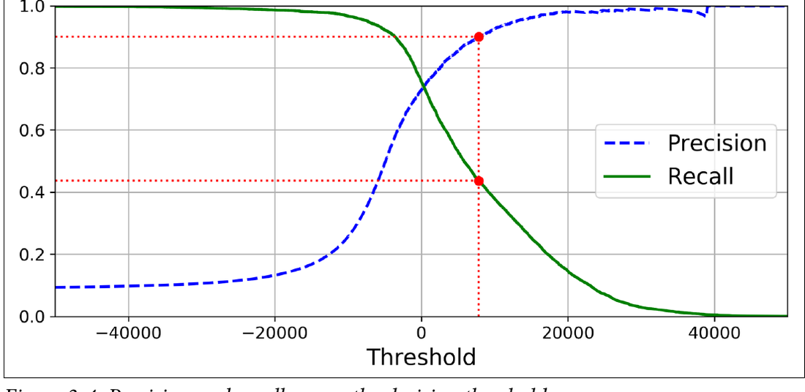
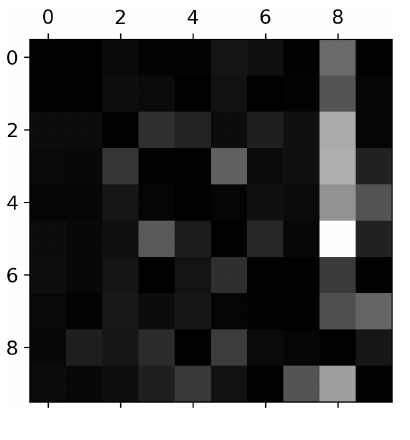

import numpy as np
import pandas as pd
import matplotlib.pyplot as plt
from IPython.display import display
from sklearn.datasets import load_digits
from sklearn.ensemble import RandomForestClassifier
from sklearn.linear_model import LogisticRegression, SGDClassifier
from sklearn.metrics import (
ConfusionMatrixDisplay,
accuracy_score,
classification_report,
confusion_matrix,
f1_score,
precision_score,
recall_score,
)
from sklearn.model_selection import cross_val_score, train_test_split
from sklearn.pipeline import Pipeline
from sklearn.preprocessing import StandardScaler
RANDOM_STATE = 42
plt.style.use("default")
pd.set_option("display.max_columns", 80)Clasificación supervisada con imágenes de dígitos
Objetivo de la actividad
Al finalizar esta actividad deberías poder explicar y ejecutar las etapas principales de un problema de clasificación:
- Identificar variables de entrada y etiqueta esperada.
- Comprender cómo una imagen se representa como números.
- Separar datos de entrenamiento y prueba.
- Entrenar un clasificador con
.fit(). - Generar predicciones con
.predict(). - Evaluar el desempeño con accuracy, matriz de confusión, precisión, recall y F1-score.
- Comparar modelos e interpretar errores concretos.
1. ¿Qué problema queremos resolver?
En aprendizaje supervisado tenemos ejemplos cuya respuesta correcta ya conocemos. El modelo observa muchos pares del tipo:
\[\text{datos de entrada} \rightarrow \text{etiqueta correcta}\]
Luego intenta aprender una regla para asignar una etiqueta a casos nuevos.
En este notebook, cada caso será una imagen pequeña de un dígito. La pregunta que queremos responder es: ¿qué número aparece en la imagen? Como las respuestas posibles son 0, 1, 2, …, 9, estamos frente a un problema de clasificación multiclase.
Para empezar, miremos una figura del capítulo de clasificación del libro base. No la usaremos como decoración: la usaremos para observar una dificultad real de la clasificación de dígitos.

La imagen muestra muchas formas distintas de escribir los mismos dígitos. Para una persona, casi todos siguen siendo reconocibles, pero para un modelo cada ejemplo debe convertirse en números. Esto anticipa dos ideas que veremos en código: cada imagen tendrá una etiqueta (y) y una representación numérica de entrada (X).
2. ¿Qué datos vamos a usar?
Usaremos load_digits, un dataset que viene incluido en scikit-learn. Esto tiene dos ventajas pedagógicas: no necesitamos descargar archivos externos y podemos concentrarnos en el proceso de clasificación.
El dataset contiene imágenes de 8 x 8 pixeles. Aunque para nosotros una imagen se ve como una figura, para el computador se representa como una matriz de números. Cada número describe la intensidad de un pixel.
Primero importamos las bibliotecas necesarias. También fijamos una semilla aleatoria (RANDOM_STATE) para que la separación de datos y los modelos sean reproducibles.
Ahora cargamos el dataset. El objeto digits trae varias piezas de información: los datos numéricos, las imágenes en forma de matriz, las etiquetas reales y algunos metadatos.
digits = load_digits()
X = digits.data
y = digits.target
imagenes = digits.images
print(f"Filas: {X.shape[0]:,}")
print(f"Variables de entrada por imagen: {X.shape[1]:,}")
print(f"Forma de cada imagen: {imagenes.shape[1]} x {imagenes.shape[2]}")
print(f"Clases disponibles: {digits.target_names}")3. ¿Qué representan X e y?
En scikit-learn se usa una convención muy frecuente:
Xcontiene las variables de entrada. En este caso, cada fila representa una imagen y cada columna representa un pixel.ycontiene la etiqueta esperada. En este caso, cada valor indica el dígito real de la imagen correspondiente.
Si una fila de X describe una imagen del número 7, entonces el valor correspondiente en y debería ser 7.
Esta separación es importante porque el modelo aprende usando ambos objetos durante el entrenamiento: mira los valores de X y los compara con las respuestas correctas de y.
df_pixeles = pd.DataFrame(X, columns=[f"pixel_{i}" for i in range(X.shape[1])])
df_pixeles["digito"] = y
df_pixeles.head()La tabla anterior muestra una versión tabular de las imágenes. Las columnas pixel_0, pixel_1, …, pixel_63 son las variables de entrada. La columna digito corresponde a la etiqueta real.
Un punto clave: aunque hablamos de imágenes, el modelo no ve dibujos como una persona. El modelo recibe filas con 64 números.
resumen_pixeles = df_pixeles.drop(columns="digito").describe().T
resumen_pixeles.head(12)4. ¿Cómo se ve una imagen para el computador?
Cada imagen tiene 8 x 8 pixeles. Si multiplicamos 8 por 8 obtenemos 64 valores. Por eso cada fila de X tiene 64 columnas.
Cada valor representa la intensidad de un pixel. En este dataset, los valores van desde 0 hasta 16: valores cercanos a 0 indican pixeles claros y valores más altos indican pixeles más intensos.
Veamos una imagen como matriz numérica y luego como visualización.
indice = 0
print(f"Etiqueta real de la imagen: {y[indice]}")
print("Matriz 8 x 8 de intensidades:")
print(imagenes[indice])fig, ax = plt.subplots(figsize=(3, 3))
ax.imshow(imagenes[indice], cmap="gray_r")
ax.set_title(f"Etiqueta real: {y[indice]}")
ax.axis("off")
plt.tight_layout()
plt.show()La matriz y la imagen contienen la misma información. La matriz es la forma que el computador puede procesar directamente; la visualización es una forma más cómoda para nosotros.
Ahora miremos un ejemplo de cada dígito. Esto ayuda a notar que algunas clases son visualmente más parecidas entre sí que otras.
fig, axes = plt.subplots(2, 5, figsize=(9, 4))
for digito, ax in enumerate(axes.ravel()):
indice_digito = np.where(y == digito)[0][0]
ax.imshow(imagenes[indice_digito], cmap="gray_r")
ax.set_title(f"Etiqueta: {digito}")
ax.axis("off")
plt.tight_layout()
plt.show()Antes de entrenar, revisemos la distribución de clases. En clasificación conviene saber si algunas clases aparecen mucho más que otras, porque eso puede afectar la interpretación de las métricas.
conteo_clases = pd.Series(y, name="digito").value_counts().sort_index()
proporcion_clases = pd.Series(y, name="digito").value_counts(normalize=True).sort_index()
resumen_clases = pd.DataFrame({
"n": conteo_clases,
"proporción": proporcion_clases,
})
display(resumen_clases)fig, ax = plt.subplots(figsize=(7, 4))
resumen_clases["n"].plot(kind="bar", ax=ax, color="#4C78A8")
ax.set_title("Distribución de clases en Digits")
ax.set_xlabel("Dígito")
ax.set_ylabel("Cantidad de imágenes")
ax.tick_params(axis="x", rotation=0)
plt.tight_layout()
plt.show()5. Separación entre entrenamiento y prueba
Para evaluar un modelo de forma honesta, no deberíamos medirlo solo con los mismos datos que usó para aprender.
Separaremos los datos en dos partes:
- Entrenamiento (
train): datos que el modelo usa para ajustar sus parámetros. - Prueba (
test): datos reservados para evaluar cómo funciona el modelo en casos que no vio durante el entrenamiento.
Si evaluáramos solo con entrenamiento, podríamos creer que el modelo funciona muy bien aunque solo haya memorizado ejemplos. El conjunto de prueba nos ayuda a estimar mejor si el modelo aprendió patrones que generalizan.
Usaremos stratify=y para mantener proporciones similares de dígitos en train y test.
X_train, X_test, y_train, y_test, imagenes_train, imagenes_test = train_test_split(
X,
y,
imagenes,
test_size=0.25,
stratify=y,
random_state=RANDOM_STATE,
)
resumen_split = pd.DataFrame({
"filas": [len(X_train), len(X_test)],
"proporción": [len(X_train) / len(X), len(X_test) / len(X)],
}, index=["train", "test"])
display(resumen_split)La separación anterior no cambia el significado de X ni de y. Simplemente divide los ejemplos disponibles en un grupo para aprender y otro grupo para evaluar.
6. ¿Qué significa entrenar un clasificador?
Un clasificador es un modelo que recibe datos de entrada y asigna una clase. En este caso, recibe 64 valores de pixeles y devuelve un dígito entre 0 y 9.
Entrenar un clasificador significa ajustar sus parámetros internos usando ejemplos con respuesta conocida. En scikit-learn, ese proceso se realiza con .fit(X_train, y_train).
La llamada .fit() puede leerse así: “modelo, observa estas entradas de entrenamiento y sus etiquetas correctas; ajusta tus parámetros para aprender la relación entre ambas”.
Partiremos con SGDClassifier, un modelo lineal rápido. Como los modelos lineales suelen beneficiarse del escalamiento de variables, usaremos un Pipeline que primero aplica StandardScaler y luego entrena el clasificador.
clasificador_sgd = Pipeline(steps=[
("escalamiento", StandardScaler()),
("modelo", SGDClassifier(random_state=RANDOM_STATE)),
])
clasificador_sgd.fit(X_train, y_train)7. Validación cruzada dentro del conjunto de entrenamiento
Antes de mirar el conjunto de prueba, podemos estimar el desempeño usando validación cruzada sobre los datos de entrenamiento. La idea es dividir X_train en varias particiones: el modelo entrena con algunas y valida con otra, repitiendo el proceso varias veces.
Esto no reemplaza al conjunto de test, pero ayuda a obtener una señal menos dependiente de una sola partición. Aquí usaremos cross_val_score con accuracy para mantener la explicación simple.
scores_cv = cross_val_score(
clasificador_sgd,
X_train,
y_train,
cv=3,
scoring="accuracy",
)
print(f"Accuracy por fold: {np.round(scores_cv, 3)}")
print(f"Accuracy promedio CV: {scores_cv.mean():.3f}")
print(f"Desviación estándar CV: {scores_cv.std():.3f}")Si los valores entre folds son parecidos, el desempeño del modelo parece relativamente estable en distintas particiones del entrenamiento. Si varían mucho, conviene investigar si faltan datos, si algunas clases son más difíciles o si el modelo es sensible a la partición.
Después de esta estimación, seguimos reservando X_test para una evaluación final con datos que no participaron en el entrenamiento ni en la validación cruzada.
El objeto anterior ya fue entrenado. Ahora puede recibir ejemplos nuevos y producir una predicción.
En scikit-learn, .predict(X_test) significa: “modelo, usa lo que aprendiste durante .fit() para asignar una clase a estas nuevas entradas”.
indices_ejemplo = np.arange(10)
predicciones_ejemplo = clasificador_sgd.predict(X_test[indices_ejemplo])
tabla_ejemplos = pd.DataFrame({
"etiqueta_real": y_test[indices_ejemplo],
"predicción": predicciones_ejemplo,
"correcta": y_test[indices_ejemplo] == predicciones_ejemplo,
})
display(tabla_ejemplos)Una predicción es correcta cuando la etiqueta predicha coincide con la etiqueta real. Si la imagen real era un 6 y el modelo predijo 6, acertó. Si la imagen real era un 6 y el modelo predijo 8, se equivocó.
Miremos esas primeras predicciones como imágenes.
fig, axes = plt.subplots(2, 5, figsize=(9, 4))
for posicion, ax in zip(indices_ejemplo, axes.ravel()):
real = y_test[posicion]
predicho = predicciones_ejemplo[posicion]
color_titulo = "black" if real == predicho else "#B22222"
ax.imshow(imagenes_test[posicion], cmap="gray_r")
ax.set_title(f"real {real} / pred {predicho}", color=color_titulo)
ax.axis("off")
plt.tight_layout()
plt.show()8. ¿Qué significa evaluar un clasificador?
Evaluar un clasificador significa comparar sus predicciones con las etiquetas reales. No basta con saber que el modelo ejecuta; necesitamos medir qué tan bien está clasificando.
Primero generamos predicciones para todo el conjunto de prueba. Luego calculamos métricas sobre esas predicciones.
y_pred_sgd = clasificador_sgd.predict(X_test)
comparacion = pd.DataFrame({
"real": y_test,
"predicho": y_pred_sgd,
"correcta": y_test == y_pred_sgd,
})
comparacion.head(10)9. ¿Cómo se interpreta el accuracy?
La accuracy mide la proporción de predicciones correctas respecto del total:
\[\text{accuracy} = \frac{\text{número de predicciones correctas}}{\text{número total de predicciones}}\]
Si el modelo acierta 90 de 100 imágenes, su accuracy es 0.90. Es una métrica simple y útil como primera aproximación.
Pero tiene una limitación: resume todo en un solo número. No nos dice qué dígitos se confundieron ni si el modelo falla más en una clase que en otra.
accuracy_manual = comparacion["correcta"].mean()
accuracy_sklearn = accuracy_score(y_test, y_pred_sgd)
print(f"Accuracy calculada manualmente: {accuracy_manual:.3f}")
print(f"Accuracy con scikit-learn: {accuracy_sklearn:.3f}")Ambos valores coinciden porque hacen el mismo cálculo. La versión manual ayuda a ver la idea; accuracy_score es la función estándar que usaremos en adelante.
10. ¿Cómo se interpreta una matriz de confusión?
La matriz de confusión muestra con más detalle dónde acierta y dónde se equivoca el modelo.
En esta matriz:
- Cada fila representa el dígito real.
- Cada columna representa el dígito predicho.
- La diagonal principal muestra aciertos: real
0predicho como0, real1predicho como1, y así sucesivamente. - Los valores fuera de la diagonal son errores.
Ejemplo de lectura: si en la fila del dígito 8 y la columna del dígito 3 aparece un valor 5, significa que cinco imágenes que realmente eran 8 fueron clasificadas como 3.
Esta matriz es importante porque puede revelar errores que la accuracy oculta. Dos modelos pueden tener accuracy parecida, pero confundirse en clases distintas.
Antes de construir nuestra matriz con scikit-learn, revisemos una versión ilustrada del libro. Esta imagen usa clasificación binaria para separar cuatro casos: aciertos negativos, aciertos positivos y dos tipos de error.

En la figura, las filas corresponden a la clase real y las columnas a la predicción. La diagonal contiene los aciertos (TN y TP); las celdas fuera de la diagonal contienen errores (FP y FN). En nuestro problema habrá diez clases en vez de dos, pero la lógica será la misma: filas reales, columnas predichas y diagonal como aciertos.
matriz_sgd = confusion_matrix(y_test, y_pred_sgd)
matriz_sgd_df = pd.DataFrame(
matriz_sgd,
index=[f"real_{c}" for c in digits.target_names],
columns=[f"pred_{c}" for c in digits.target_names],
)
display(matriz_sgd_df)fig, ax = plt.subplots(figsize=(6, 5))
ConfusionMatrixDisplay.from_predictions(
y_test,
y_pred_sgd,
display_labels=digits.target_names,
cmap="Blues",
values_format="d",
ax=ax,
)
ax.set_title("Matriz de confusión - SGDClassifier")
plt.tight_layout()
plt.show()Para leer la matriz, parte por la diagonal. Si los valores de la diagonal son altos, el modelo está acertando muchas imágenes de esas clases. Luego revisa las celdas fuera de la diagonal: los valores más grandes indican confusiones frecuentes.
11. ¿Cómo se interpretan precisión, recall y F1-score?
Además de accuracy, podemos evaluar cada clase con métricas más específicas.
La precisión para una clase responde: de todas las imágenes que el modelo predijo como esa clase, ¿cuántas eran correctas?
\[\text{precisión} = \frac{\text{verdaderos positivos}}{\text{verdaderos positivos} + \text{falsos positivos}}\]
La recall para una clase responde: de todas las imágenes que realmente eran de esa clase, ¿cuántas encontró el modelo?
\[\text{recall} = \frac{\text{verdaderos positivos}}{\text{verdaderos positivos} + \text{falsos negativos}}\]
El F1-score combina precisión y recall:
\[F1 = 2 \cdot \frac{\text{precisión} \cdot \text{recall}}{\text{precisión} + \text{recall}}\]
En clasificación multiclase, estas métricas se calculan por clase. Por ejemplo, precisión para el dígito 3 significa: de todas las imágenes predichas como 3, cuántas realmente eran 3. Recall para el dígito 3 significa: de todas las imágenes que realmente eran 3, cuántas logró encontrar el modelo.
Precisión y recall suelen moverse en tensión cuando cambiamos la regla de decisión de un clasificador. La siguiente figura del libro lo muestra con ejemplos ordenados por score.

Si el umbral se mueve hacia la derecha, el modelo predice positivo solo cuando tiene más evidencia: puede subir la precisión, pero algunos positivos reales quedan fuera y baja el recall. Si el umbral se mueve hacia la izquierda, el modelo detecta más positivos reales, pero puede aceptar más falsos positivos. En este notebook no ajustaremos umbrales, pero esta imagen ayuda a entender por qué precisión y recall no cuentan exactamente lo mismo.
También podemos mirar esta relación como curvas contra el umbral:

La curva de precisión y la de recall no responden igual al cambiar el umbral. Por eso, al evaluar un clasificador, conviene mirar más de una métrica y no quedarse solo con accuracy.
metricas_sgd = {
"accuracy": accuracy_score(y_test, y_pred_sgd),
"precision_macro": precision_score(y_test, y_pred_sgd, average="macro", zero_division=0),
"recall_macro": recall_score(y_test, y_pred_sgd, average="macro", zero_division=0),
"f1_macro": f1_score(y_test, y_pred_sgd, average="macro", zero_division=0),
}
display(pd.DataFrame([metricas_sgd], index=["SGDClassifier"]).style.format("{:.3f}"))El promedio macro calcula la métrica para cada dígito y luego promedia dando el mismo peso a todas las clases. Esto es útil cuando queremos mirar el desempeño de forma equilibrada entre dígitos.
El siguiente reporte muestra las métricas por clase. Léelo fila por fila: cada fila resume cómo le fue al modelo con un dígito específico.
print(classification_report(
y_test,
y_pred_sgd,
target_names=[str(c) for c in digits.target_names],
zero_division=0,
))En el reporte aparecen dos promedios importantes:
macro avg: calcula la métrica por clase y luego promedia dando el mismo peso a cada dígito. Es útil cuando queremos tratar todas las clases como igualmente importantes.weighted avg: también calcula la métrica por clase, pero pondera por la cantidad de ejemplos de cada clase. Si una clase tiene más observaciones, influye más en el promedio.
En este dataset las clases están bastante balanceadas, por lo que ambos promedios deberían ser parecidos. En datasets desbalanceados pueden separarse más, y esa diferencia también entrega información.
Una pregunta útil: si el recall del dígito 8 es bajo, ¿qué significa? Significa que, de todas las imágenes que realmente eran 8, el modelo no logró reconocer varias como 8. Algunas fueron enviadas a otras columnas de la matriz de confusión.
12. ¿Por qué comparar modelos?
Un solo modelo no nos dice si el resultado es bueno para el problema. Comparar modelos permite revisar si otra forma de aprender produce mejores predicciones o errores más razonables.
Aquí compararemos tres clasificadores simples:
SGDClassifier: modelo lineal rápido.LogisticRegression: modelo lineal clásico para clasificación.RandomForestClassifier: conjunto de árboles de decisión que puede capturar relaciones no lineales.
Un modelo con mayor accuracy puede parecer mejor, pero no siempre es suficiente para tomar una decisión. También debemos mirar la matriz de confusión y las métricas por clase, porque un modelo puede mejorar el promedio general y aun así empeorar en una clase importante.
modelos = {
"SGDClassifier": Pipeline(steps=[
("escalamiento", StandardScaler()),
("modelo", SGDClassifier(random_state=RANDOM_STATE)),
]),
"LogisticRegression": Pipeline(steps=[
("escalamiento", StandardScaler()),
("modelo", LogisticRegression(max_iter=1000, random_state=RANDOM_STATE)),
]),
"RandomForestClassifier": RandomForestClassifier(
n_estimators=200,
random_state=RANDOM_STATE,
n_jobs=-1,
),
}
resultados = []
predicciones = {}
for nombre, modelo in modelos.items():
print(f"Entrenando {nombre}...")
modelo.fit(X_train, y_train)
y_pred = modelo.predict(X_test)
predicciones[nombre] = y_pred
resultados.append({
"modelo": nombre,
"accuracy": accuracy_score(y_test, y_pred),
"precision_macro": precision_score(y_test, y_pred, average="macro", zero_division=0),
"recall_macro": recall_score(y_test, y_pred, average="macro", zero_division=0),
"f1_macro": f1_score(y_test, y_pred, average="macro", zero_division=0),
})
tabla_resultados = (
pd.DataFrame(resultados)
.set_index("modelo")
.sort_values("f1_macro", ascending=False)
)
display(tabla_resultados.style.format("{:.3f}"))La tabla anterior permite comparar modelos con varias métricas. Si un modelo gana por muy poco, conviene mirar también sus errores antes de concluir que es claramente superior.
Para continuar, seleccionaremos el modelo con mayor f1_macro. Esa elección es razonable aquí porque queremos un desempeño equilibrado entre clases.
nombre_mejor_modelo = tabla_resultados["f1_macro"].idxmax()
y_pred_mejor = predicciones[nombre_mejor_modelo]
print(f"Mejor modelo según F1 macro: {nombre_mejor_modelo}")Ahora revisamos la matriz de confusión del modelo seleccionado. Esto permite comprobar si el buen promedio se distribuye de manera razonable entre los dígitos.
fig, ax = plt.subplots(figsize=(6, 5))
ConfusionMatrixDisplay.from_predictions(
y_test,
y_pred_mejor,
display_labels=digits.target_names,
cmap="Blues",
values_format="d",
ax=ax,
)
ax.set_title(f"Matriz de confusión - {nombre_mejor_modelo}")
plt.tight_layout()
plt.show()13. ¿Qué podemos aprender de los errores?
Los errores no son solo fallas; también son evidencia. Cuando miramos imágenes mal clasificadas, podemos preguntarnos si el error parece razonable, si la imagen es ambigua o si el modelo está confundiendo sistemáticamente dos formas.
Primero identificaremos los pares de dígitos que más se confunden. Luego veremos algunas imágenes donde el modelo se equivocó.
El análisis de errores también puede visualizarse como una matriz donde se atenúa la diagonal y se resaltan las confusiones. Esta figura del libro muestra justamente esa idea.

Las zonas más claras fuera de la diagonal indican errores más frecuentes. Esta lectura es especialmente útil en problemas multiclase: no solo preguntamos “¿cuánto se equivocó?”, sino “¿entre qué clases se equivocó?”. A continuación construiremos una tabla de confusiones y miraremos imágenes mal clasificadas de nuestro experimento.
matriz_mejor = confusion_matrix(y_test, y_pred_mejor)
matriz_errores = matriz_mejor.copy()
np.fill_diagonal(matriz_errores, 0)
pares_confundidos = []
for real in range(matriz_errores.shape[0]):
for predicho in range(matriz_errores.shape[1]):
cantidad = matriz_errores[real, predicho]
if cantidad > 0:
pares_confundidos.append({
"real": real,
"predicho": predicho,
"errores": cantidad,
})
tabla_confusiones = (
pd.DataFrame(pares_confundidos)
.sort_values("errores", ascending=False)
.head(10)
)
display(tabla_confusiones)Lee cada fila de la tabla como una frase. Por ejemplo, si aparece real = 8, predicho = 3, errores = 5, significa que cinco imágenes reales de 8 fueron clasificadas como 3.
Este tipo de lectura conecta las métricas con errores concretos.
indices_error = np.where(y_test != y_pred_mejor)[0]
n_mostrar = min(10, len(indices_error))
if n_mostrar == 0:
print("No hay errores en el conjunto de test para este modelo.")
else:
fig, axes = plt.subplots(2, 5, figsize=(9, 4))
for indice_error, ax in zip(indices_error[:n_mostrar], axes.ravel()):
ax.imshow(imagenes_test[indice_error], cmap="gray_r")
ax.set_title(
f"real {y_test[indice_error]} / pred {y_pred_mejor[indice_error]}",
color="#B22222",
)
ax.axis("off")
for ax in axes.ravel()[n_mostrar:]:
ax.axis("off")
plt.tight_layout()
plt.show()Al mirar las imágenes mal clasificadas, intenta distinguir entre dos situaciones:
Una posibilidad es que la imagen sea ambigua incluso para una persona. Otra posibilidad es que la imagen parezca clara, pero el modelo no haya aprendido bien esa diferencia. Ambas situaciones son útiles para interpretar el desempeño.
14. Actividad práctica
Trabaja sobre una copia del notebook o agrega nuevas celdas al final. La actividad busca que interpretes resultados, no solo que ejecutes código.
- Cambia el modelo utilizado. Por ejemplo, prueba otra configuración de
LogisticRegression,SGDClassifieroRandomForestClassifier. - Compara al menos dos clasificadores usando una tabla con accuracy, precisión macro, recall macro y F1 macro.
- Para el modelo que elijas como mejor, muestra su matriz de confusión.
- Identifica dos clases que el modelo confunda. Escribe la lectura en palabras, por ejemplo: “algunas imágenes reales de 8 fueron predichas como 3”.
- Explica con tus palabras qué podría significar esa confusión mirando las imágenes. ¿Son visualmente parecidas?, ¿la escritura es ambigua?, ¿hay pocos pixeles marcados?
- Calcula o interpreta accuracy, precisión, recall y F1-score. No basta con pegar la tabla: explica qué te dice cada métrica sobre el modelo.
- Propón una conclusión breve: ¿qué modelo parece más adecuado para este problema y por qué? Considera tanto las métricas como los tipos de errores observados.
La respuesta esperada debe combinar código, resultados e interpretación. En ciencia de datos, una métrica sin interpretación rara vez es suficiente para tomar una decisión.
15. Conclusiones
En esta actividad construimos un flujo básico de clasificación supervisada con imágenes pequeñas de dígitos. Vimos que una imagen puede representarse como 64 valores numéricos, que X contiene las entradas y que y contiene las etiquetas reales.
También distinguimos dos acciones centrales de scikit-learn: .fit() entrena el modelo usando ejemplos etiquetados, mientras que .predict() usa el modelo entrenado para asignar clases a casos nuevos.
La evaluación mostró que la accuracy es útil, pero no suficiente. La matriz de confusión permite ver qué clases se confunden, y precisión, recall y F1-score ayudan a interpretar el desempeño por clase en un problema multiclase.
Finalmente, comparar modelos y revisar errores concretos nos recuerda que entrenar clasificadores no es solo buscar el número más alto en una tabla. También necesitamos entender qué tipo de errores comete el modelo y si esos errores son aceptables para el contexto del problema.
Referencias
Géron, A. (2019). Hands-on machine learning with Scikit-Learn, Keras, and TensorFlow: Concepts, tools, and techniques to build intelligent systems (2nd ed.). O’Reilly Media. https://www.oreilly.com/library/view/hands-on-machine-learning/9781492032632/
Scikit-learn developers. (2024). sklearn.datasets.load_digits. Scikit-learn documentation. https://scikit-learn.org/stable/modules/generated/sklearn.datasets.load_digits.html
Scikit-learn developers. (2024). sklearn.model_selection.train_test_split. Scikit-learn documentation. https://scikit-learn.org/stable/modules/generated/sklearn.model_selection.train_test_split.html
Scikit-learn developers. (2024). sklearn.model_selection.cross_val_score. Scikit-learn documentation. https://scikit-learn.org/stable/modules/generated/sklearn.model_selection.cross_val_score.html
Scikit-learn developers. (2024). sklearn.linear_model.SGDClassifier. Scikit-learn documentation. https://scikit-learn.org/stable/modules/generated/sklearn.linear_model.SGDClassifier.html
Scikit-learn developers. (2024). sklearn.linear_model.LogisticRegression. Scikit-learn documentation. https://scikit-learn.org/stable/modules/generated/sklearn.linear_model.LogisticRegression.html
Scikit-learn developers. (2024). sklearn.ensemble.RandomForestClassifier. Scikit-learn documentation. https://scikit-learn.org/stable/modules/generated/sklearn.ensemble.RandomForestClassifier.html
Scikit-learn developers. (2024). sklearn.metrics.confusion_matrix. Scikit-learn documentation. https://scikit-learn.org/stable/modules/generated/sklearn.metrics.confusion_matrix.html
Scikit-learn developers. (2024). sklearn.metrics.classification_report. Scikit-learn documentation. https://scikit-learn.org/stable/modules/generated/sklearn.metrics.classification_report.html
Scikit-learn developers. (2024). 3.3. Metrics and scoring: Quantifying the quality of predictions. Scikit-learn documentation. https://scikit-learn.org/stable/modules/model_evaluation.html